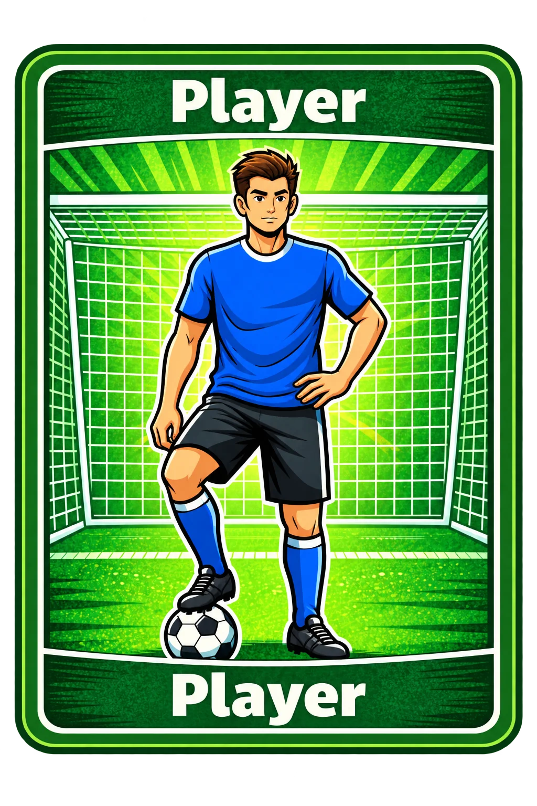
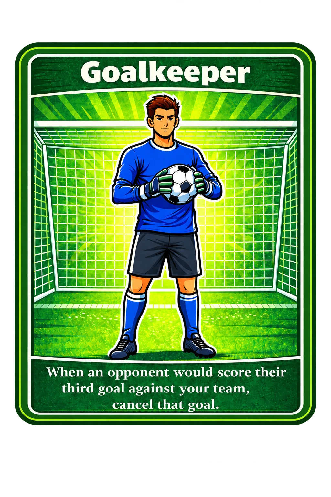

ROLE CARDS
PLAYER and GOALKEEPER tell you who you are. They are not Action Cards and are not part of your Action hand.
Never played before? Start at Step 1 and do exactly what the page says. The guide explains what to put on the table, what “draw 1” means, what to do on your turn, and how your first attack works.




PLAYER and GOALKEEPER tell you who you are. They are not Action Cards and are not part of your Action hand.

This is the ball. It shows who has possession. Keep it separate from the Action deck.
SHOOT, DEFENSE, TACKLE, DRIBBLE PAST, and YELLOW. These are the cards you shuffle, deal, draw, hold in your hand, and play.
Split everyone into BLUE and GREEN as evenly as possible. Each team must have exactly 1 Goalkeeper Role Card; all other Role Cards are Players.
Each player gets one Role Card and looks at it. Keep Role Cards hidden from opponents. Do not mix Role Cards into the Action deck.
The Soccer Card is not shuffled. It is the possession marker and will be handed from player to player during the game.
Shuffle SHOOT, DEFENSE, TACKLE, DRIBBLE PAST, and YELLOW together. This becomes the Action deck.
These 5 cards are your starting hand. Hold them so other players cannot see them. Put all remaining Action Cards face-down in the middle. That face-down stack is the DRAW PILE.
Choose the fixed circle of players before the game starts. Alternate BLUE and GREEN when possible. Keep this same order for the whole game.
The winning side starts the game and receives the Soccer Card. The player taking the first turn is now ready to begin.
Before playing anything, DRAW 1. Take the top card from the face-down Draw Pile and add it to your hand. Then decide what legal action you want to take.
Take exactly 1 card from the TOP of the face-down Action Draw Pile and put it into your hand. Do not draw a Role Card. Do not draw the Soccer Card. Do not automatically play the card you just drew. You simply add it to your hand, then continue your turn.
The Role Card stays hidden at 0, 1, and 2 Tokens. A successful third Token eliminates that player. Only after the player is eliminated do they reveal their Role Card.
The moment the opposing Goalkeeper is finally eliminated, your team wins immediately. Stop the game at once.
SOCCER CARD = POSSESSIONKeep it separate from the Action deck. Whoever physically holds this card has possession.
Make BLUE and GREEN. Give each player 1 hidden Role Card. Each team has exactly 1 Goalkeeper.
Shuffle only the Action Cards. Deal 5 to every player. Put the rest face-down in the middle as the Draw Pile.
Rock–Paper–Scissors decides the starting side. The winner starts and receives the Soccer Card.
Set one circular order before the game. Alternate teams when possible.
Unless YELLOW skipped your turn, take the top card from the face-down Action Draw Pile and add it to your hand. Do this before PASS, SHOOT, TACKLE, or any other normal on-turn action.
Top card of the face-down Draw Pile → into your hand.
If you hold Soccer, you have possession. If someone else holds it, they have possession.
With Soccer: you may PASS or use SHOOT. Without Soccer: TACKLE can take it. Other legal cards may also be played when their timing allows.
If somebody reacts with DEFENSE or DRIBBLE PAST, finish the whole chain before doing anything else.
Say “END TURN.” The next living player in the fixed order now begins at Step 1 and draws 1.
You have possession, but that does not give you an extra turn. Wait until your place in the fixed turn order. On your turn, draw 1 first, then act.
You still take your normal turn. Draw 1 first. You may use legal cards such as TACKLE when allowed, or end your turn if you do not want or cannot take another legal action.
On your own turn, if you hold Soccer, give it to a living teammate. Your turn continues.
NO PASS CARD — PASS IS AN ACTIONOn your own turn, you must hold Soccer. Choose one living opponent and give the defending team a reaction chance.
The target or any living teammate may use it. A successful DEFENSE stops the goal and gives Soccer to the player who actually defended.

After the first DEFENSE, beat that DEFENSE and continue the same attack. It does not look at the top of the deck in Strategy Mode.
After DRIBBLE PAST, any one living defender may DEFENSE again. If cards remain after playing it, discard 1 additional card.
HAND BECOMES 0? NO EXTRA DISCARD
On your own turn, take Soccer from whoever currently has it. DEFENSE cannot stop TACKLE. Your turn continues.

Affects the next living player in fixed turn order. You do not choose the target.
SEE SECTION 7SHOOTSHOOTDEFENSESHOOTDEFENSEDRIBBLESHOOTDEFENSEDRIBBLE2ND DEFENSEIf the second defender still has cards after playing DEFENSE, discard 1 additional card. If playing DEFENSE leaves that hand at 0, no extra discard is required.
YELLOW affects the next living player. You do not choose a target.
Every player's Role Card stays hidden while that player is still alive. 0 Tokens = hidden. 1 Token = hidden. 2 Tokens = still hidden.
Shuffle all Action Cards in the Discard Pile into a new face-down Draw Pile, then draw normally. Never shuffle Role Cards, Soccer, Tokens, hands, or cards currently resolving.
You are still alive. On your next normal turn draw 1 first. If you hold Soccer, PASS is still legal even with no Action Cards.
It is legal. Play the DEFENSE; if your hand becomes 0, you do not pay the extra discard.